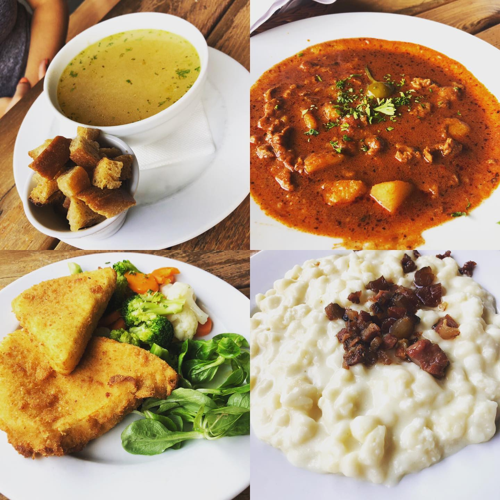

Baraní guľáš podľa @almasyjan — Normy Jedál
Cesta ze Slovenska musí končit na Salaši Krajinka @salaskrajinka !!! #salas #salaskrajinka #salaš #salaškrajinka #jidlo #jídlo #jiedlo #slovakia #slovakiafood #halusky #haluskysbryndzou #halušky #baranigulas #cesnecka #česnečka #ovcisyr #dnesjim #dnesjiem